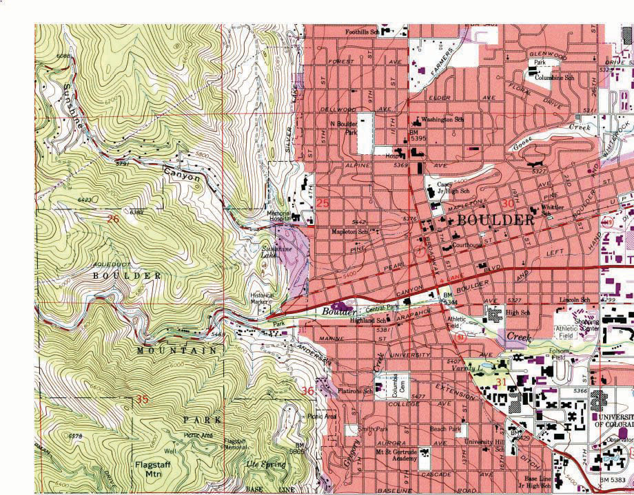
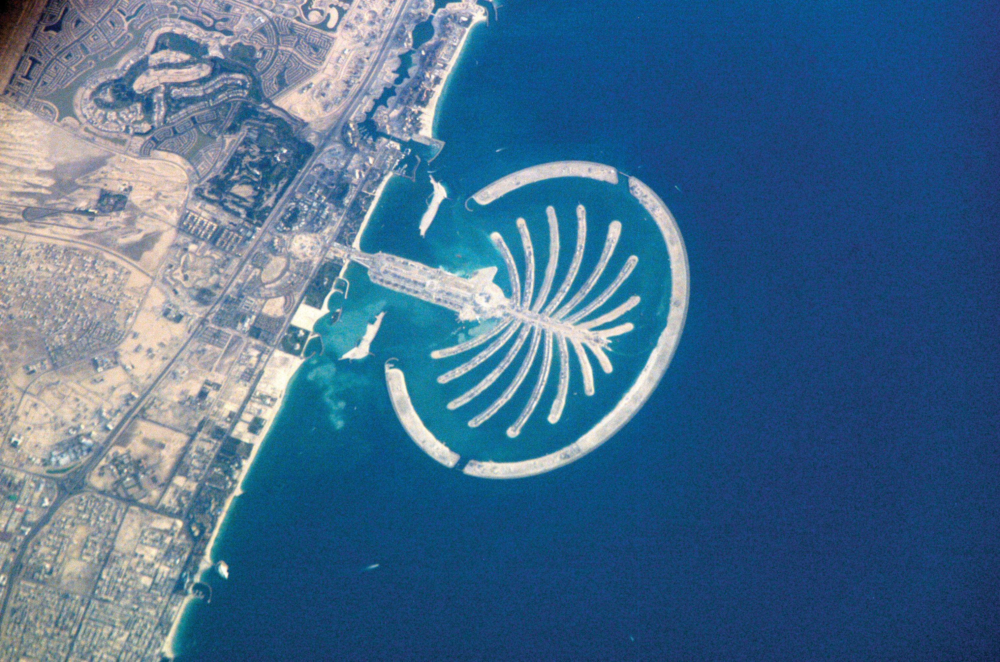
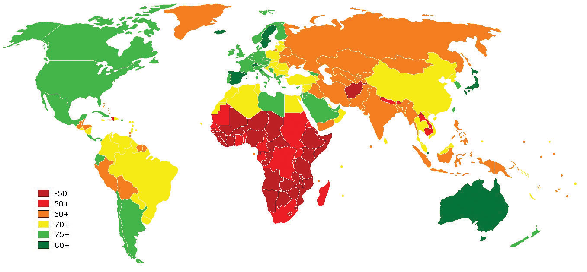
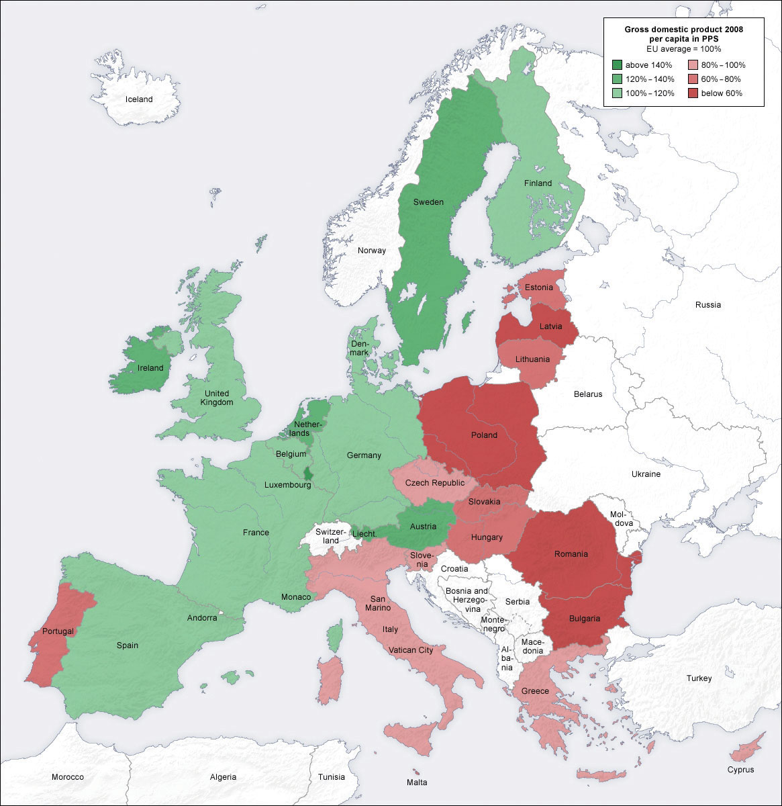
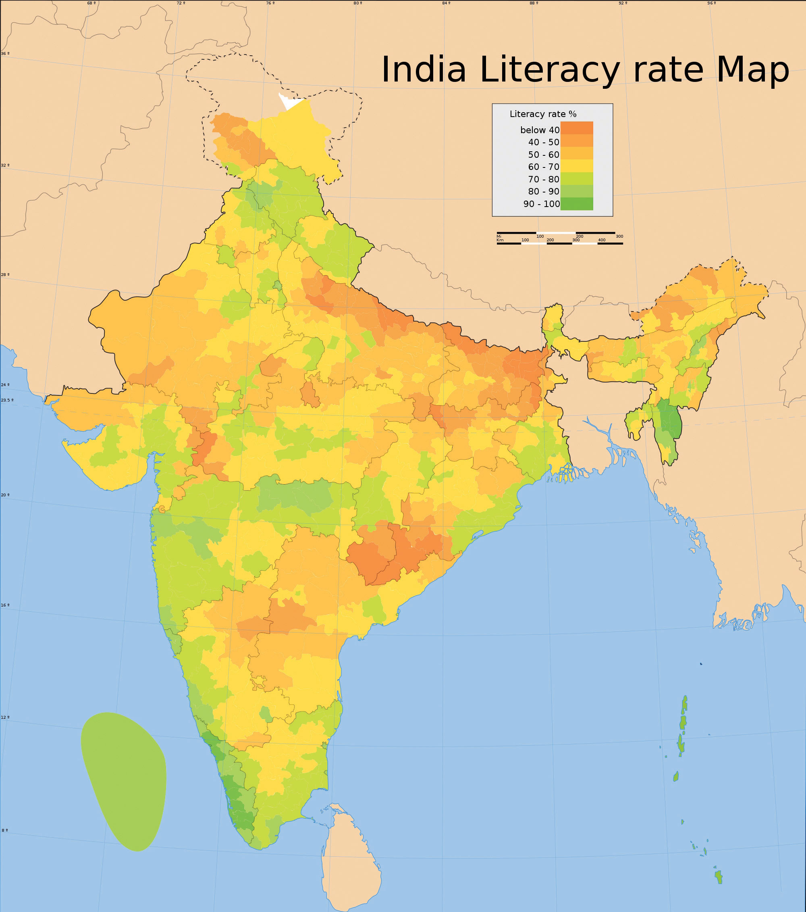
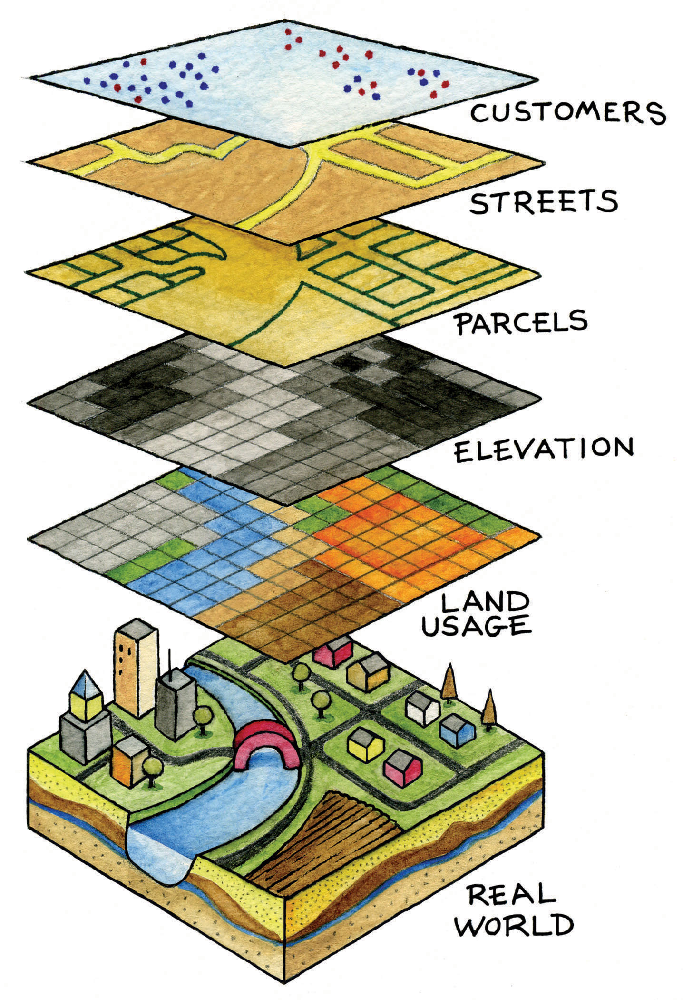
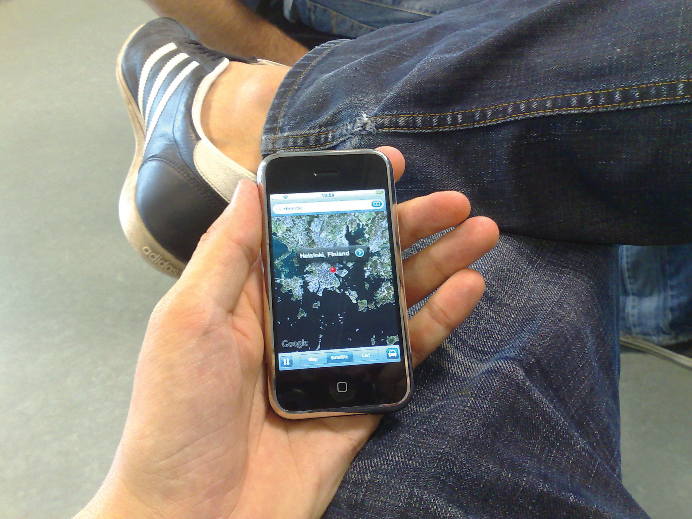
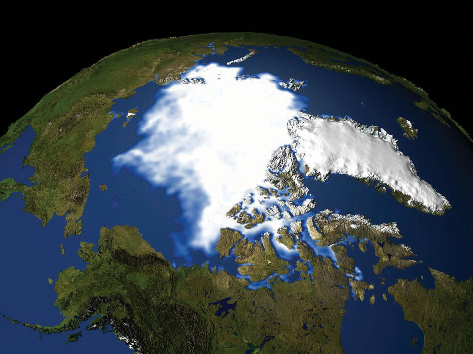

Maps are among the most compelling forms of information for several reasons. Maps are artistic. Maps are scientific. Maps preserve history. Maps clarify. Maps reveal the invisible. Maps inform the future. Regardless of the reason, maps capture the imagination of people around the world. As one of the most trusted forms of information, map makers and geographic information system (GIS) practitioners hold a considerable amount of power and influence (Wood 1992; Monmonier 1996).Wood, D. 1992. The Power of Maps. New York: Guilford., Monmonier, M. 1996. How to Lie with Maps. Chicago: University of Chicago Press. Therefore, understanding and appreciating maps and how maps convey information are important aspects of GISs. The appreciation of maps begins with exploring various map types.
So what exactly is a map? Like GISs, there are probably just as many definitions of maps as there are people who use and make them (see Muehrcke and Muehrcke 1998).Muehrcke, P., and J. Muehrcke. 1998. Map Use. Madison, WI: JP Publications. For starters, we can define a map simply as a representation of the world. Such maps can be stored in our brain (i.e., mental maps), they can be printed on paper, or they can appear online. Notwithstanding the actual medium of the map (e.g., our fleeting thoughts, paper, or digital display), maps represent and describe various aspects of the world. For purposes of clarity, the three types of maps are the reference map, the thematic map, and the dynamic map.
The primary purpose of a reference mapThe family of maps that are used to locate features on the surface of the earth. is to deliver location information to the map user. Geographic features and map elements on a reference map tend to be treated and represented equally. In other words, no single aspect of a reference map takes precedent over any other aspect. Moreover, reference maps generally represent geographic reality accurately. Examples of some common types of reference maps include topographic maps such as those created by the United States Geological Survey (USGS; see http://topomaps.usgs.gov) and image maps obtained from satellites or aircraft that are available through online mapping services.
Figure 2.1 USGS Topographic Map of Boulder, CO
Figure 2.2 Image Map of Palm Island, Dubai, from NASA
The accuracy of a given reference map is indeed critical to many users. For instance, local governments need accurate reference maps for land use, zoning, and tax purposes. National governments need accurate reference maps for political, infrastructure, and military purposes. People who depend on navigation devices like global positioning system (GPS) units also need accurate and up-to-date reference maps in order to arrive at their desired destinations.
Contrasting the reference map are thematic maps. As the name suggests, thematic mapsThe family of maps that are about a particular topic or theme. are concerned with a particular theme or topic of interest. While reference maps emphasize the location of geographic features, thematic maps are more concerned with how things are distributed across space. Such things are often abstract concepts such as life expectancy around the world, per capita gross domestic product (GDP) in Europe, or literacy rates across India. One of the strengths of mapping, and in particular of thematic mapping, is that it can make such abstract and invisible concepts visible and comparable on a map.
Figure 2.3 World Life Expectancies
Figure 2.4 European GDP
Figure 2.5 Indian Literacy Rates
It is important to note that reference and thematic maps are not mutually exclusive. In other words, thematic maps often contain and combine geographical reference information, and conversely, reference maps may contain thematic information. What is more, when used in conjunction, thematic and reference maps often complement each other.
For example, public health officials in a city may be interested in providing equal access to emergency rooms to the city’s residents. Insights into this and related questions can be obtained through visual comparisons of a reference map that shows the locations of emergency rooms across the city to thematic maps of various segments of the population (e.g., households below poverty, percent elderly, underrepresented groups).
Within the context of a GIS, we can overlayThe process of integrating two or more map layers on the same map. the reference map of emergency rooms directly on top of the population maps to see whether or not access is uniform across neighborhood types. Clearly, there are other factors to consider when looking at emergency room access (e.g., access to transport), but through such map overlays, underserved neighborhoods can be identified.
Figure 2.6 Map Overlay Process
When presented in hardcopy format, both reference and thematic maps are static or fixed representations of reality. Such permanence on the page suggests that geography and the things that we map are also in many ways fixed or constant. This is far from reality. The integration of GISs with other forms of information technology like the Internet and mobile telecommunications is rapidly changing this view of maps and mapping, as well as geography at large.
The diffusion of GISs and the popularity of online mapping tools and applications speak to this shift in thinking about maps and map use. In this regard, it is worthwhile to discuss the diffusion of dynamic maps. Dynamic mapsInteractive and changeable representations of the earth and its resident phenomena. are simply changeable or interactive representations of the earth. Dynamic mapping refers more to how maps are used and delivered to the map user today (e.g., online, via mobile phone) than to the content of the map itself. Both reference and thematic maps can be dynamic in nature, and such maps are an integral component to any GIS. The key point about dynamic maps is that more and more people, not just GIS professionals, have access to such maps.
Unlike a hardcopy map that has features and elements users cannot modify or change, dynamic maps encourage and sometimes require user interaction. Such interaction can include changing the scale or visible area by zooming in or zooming out, selecting which features or layers to include or to remove from a map (e.g., roads, imagery), or even starting and stopping a map animation.
Figure 2.7 Google Maps on an iPhone
Figure 2.8 Polar Ice Cap
To see the animation, go to http://svs.gsfc.nasa.gov/goto?3464.
Just as dynamic maps will continue to evolve and require more user interaction in the future, map users will demand more interactive map features and controls. As this democratization of maps and mapping continues, the geographic awareness and map appreciation of map users will also increase. Therefore, it is of critical importance to understand the nature, form, and content of maps to support the changing needs, demands, and expectations of map users in the future.